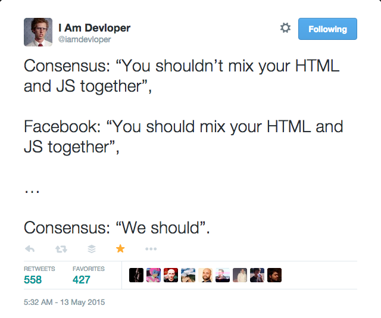
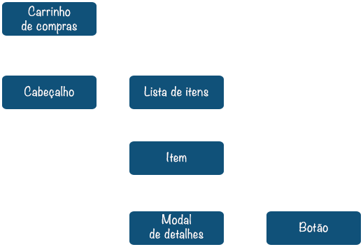
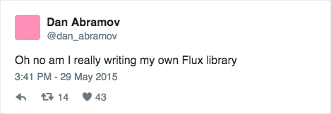
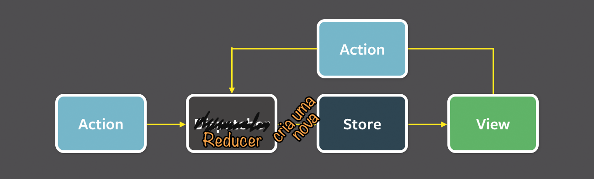
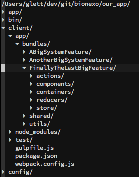

<!doctype html>
<html>
	<head>
		<meta charset="utf-8">
		<meta name="viewport" content="width=device-width, initial-scale=1.0, maximum-scale=1.0, user-scalable=no">

		<title>reveal.js</title>

		<link rel="stylesheet" href="css/reveal.css">
		<link rel="stylesheet" href="css/theme/black.css">

		<!-- Theme used for syntax highlighting of code -->
		<link rel="stylesheet" href="lib/css/zenburn.css">
		<link rel="stylesheet" href="plugin/prism/prism.css" />

		<!-- Printing and PDF exports -->
		<script>
			var link = document.createElement( 'link' );
			link.rel = 'stylesheet';
			link.type = 'text/css';
			link.href = window.location.search.match( /print-pdf/gi ) ? 'css/print/pdf.css' : 'css/print/paper.css';
			document.getElementsByTagName( 'head' )[0].appendChild( link );
		</script>

		<link rel="stylesheet" href="css/custom.css">
	</head>
	<body>
		<div class="reveal">
			<div class="slides">
				<section  data-markdown id="introduction" >
          <script type="text/template">
# React + Redux

## <!-- .element: style="text-transform: lowercase;" --> by [@gabriellett](http://github.com/gabriellett)

------

## Eu

<div class="split">
  <div class="split-col-pic">
    
  </div>
  <div class="split-col-info">
    Gabriel Lett Viviani<br/>
    webapps desde criancinha<br/>
    Java -> Ruby -> Python, Golang, Javascript, Scala etc
    <div class="split">
      <div class="split-col-50">
        <div class="imgs">
          
        </div>
      </div>
      <div class="split-col-50">
        <div class="imgs">
          
        </div>
      </div>
    </div>
  </div>
</div>

------


------

## Agenda

* React<!-- .element class="fragment" -->
  * O que é<!-- .element class="fragment" -->
  * Como funciona<!-- .element class="fragment" -->
  * Componentes<!-- .element class="fragment" -->
  * VirtualDOM<!-- .element class="fragment" -->
* Boas práticas<!-- .element class="fragment" -->
* Redux <!-- .element class="fragment" -->
* [re]gene <!-- .element class="fragment" -->
          </script>
        </section>
				<section  data-markdown id="what-is-react" >
          <script type="text/template">
# O que é React?

------

<blockquote class="blockquote--wide">
  <p>"A JAVASCRIPT LIBRARY FOR BUILDING USER INTERFACES"</p>
</blockquote>

------

Ah beleza, é tipo o angular então?

Não<!-- .element class="fragment highlight-red" -->

é mais simples :)<!-- .element class="fragment" -->
Pode ser chamado de o "V" do MVC<!-- .element class="fragment" -->

------

Então beleza, o react é uma biblioteca em javascript pra escrever iterfaces legais!


          </script>
        </section>
				<section  data-markdown id="fundamentals" >
          <script type="text/template">
# Como funciona?

------

Declarativo<!-- .element class="fragment" -->

Baseado em Componentes<!-- .element class="fragment" -->

One-way data flow<!-- .element class="fragment" -->

------

## Declarativo

O que eu quero

e não como eu quero<!-- .element class="fragment highlight-red" -->

------

<div class="split">
	<div class="split-col-50">
		Imperativo
		<pre class="language-javascript"><code>
var onChange = function(){
  text = $(input).val();
  $("div text").text(text);
});

$("input").on('change', onChange);
		</pre></code>
	</div>
	<div><!-- .element class="fragment split-col-50" -->
		Declarativo
		<pre class="language--clean  language-jsx"><code>
&lt;div className="text"></span>
  {text}
&lt;/div>
		</pre></code>
	</div>
</div>

------

O React faz o trabalho de atualizar a interface pra você

É uma interface REATIVA 


------

## Componentes

Componentes everywhere

------

<pre class="language-jsx"><code>
class HelloMessage extends React.Component {
  render() {
    return &lt;div>Hello {this.props.name}&lt;/div>;
  }
}

ReactDOM.render(&lt;HelloMessage name="Jane" />, mountNode);
</pre></code>

------

Aaaaaaa mas como assim Javascript junto com HTML que loucura!

Calma, vai passar <!-- .element class="fragment highlight-green" -->

prometo <!-- .element class="fragment highlight-green" -->

------

### Sim, JS + HTML!
ou
### JSX

------

<a href="https://twitter.com/iamdevloper/status/598435575662813184"></a>

------

Componentes de React com JSX permitem você construir pedaços de negócio, e não pedaços de bibliotecas

mas como que o browser renderiza? <!-- .element class="fragment highlight-green" -->

no final, tudo compila pra JavaScript mesmo :) <!-- .element class="fragment" -->

maaas, se não quiser não precisa usar JSX, é opcional <!-- .element class="fragment" -->

------

## Estado

Componentes podem ter estado!

<code>this.state</code> <!-- .element class="fragment" -->

------

## Ciclo de vida

* Mounting<!-- .element class="fragment" -->
* Updating<!-- .element class="fragment" -->
* Unmounting<!-- .element class="fragment" -->


------

<div class="split">
  <div class="split-col-70">
    <pre data-line="1,4,7" class="language-jsx language--clean language--small"><code>
class Timer extends React.Component {
  constructor(props) {
    super(props);
    this.state = {secondsElapsed: 0};
  }
  tick() {
    this.setState((prevState) => ({
      secondsElapsed: prevState.secondsElapsed + 1
    }));
  }
    </pre></code>
  </div>
  <div class="split-col-30">
    <p>1. Cria o componente</p>
    <p>4. Inicia o estado</p>
    <p>7. Atualiza o estado</p>
  </div>
</div>

------

<div class="split">
  <div class="split-col-70">
    <pre data-line="1,5" class="language-jsx language--clean language--small"><code>
  componentDidMount() {
    this.interval = setInterval(() => this.tick(), 1000);
  }

  componentWillUnmount() {
    clearInterval(this.interval);
  }
    </pre></code>
  </div>
  <div class="split-col-30">
    <p>1. Executa quando o componente renderiza no DOM<p>
    <p>5. Executa antes do componente ser destruido
  </div>
</div>

------

<div class="split">
  <div class="split-col-70">
    <pre data-line="3,8" class="language-jsx language--clean language--small"><code>
  render() {
    return (
      &lt;div>Seconds Elapsed: {this.state.secondsElapsed}&lt;/div>
    );
  }
}

ReactDOM.render(&lt;Timer />, mountNode);
    </code></pre>
  </div>
  <div class="split-col-30">
    <p>3. Obtem o valor do estado
    <p>8. Efetivamente renderiza o componente
  </div>
</div>

------

## One-way data flow

------

#### One-way data flow




          </script>
        </section>
				<section  data-markdown id="virtualdom" >
          <script type="text/template">
# Virtual DOM

------

mas antes...

------

## DOM

------

Document Object Modal (DOM) é uma interafce para HTML, XML e XHTML. Ele gera uma representação estruturada do documento e define uma maneira qcom que essa estrutura pode ser acessada, para que possa ser alterada de alguma maneira.

------

Só que em interfaces complexas...

...as coisas podem ficar bem complicadas <!-- .element class="fragment"> -->

------

Um VirtualDOM permite que você altere o dado de maneira declarativa.

* Observar o dado <!-- .element class="fragment"> -->
<li > Marcar objetos como *sujos* </li><!-- .element class="fragment"> -->
* Gerar o diff <!-- .element class="fragment"> -->
* Renderizar só o necessário <!-- .element class="fragment"> -->
          </script>
        </section>
				<section  data-markdown id="best-practices" >
          <script type="text/template">
# Melhores Praticas

------

<ul>
  <li class="fragment"> *PropTypes* </li>
  <li class="fragment"> *Presentational Components* e *Container Components* </li>
  <li class="fragment"> *ECMA6* </li>
  <li class="fragment"> *ESLint* </li>
</ul>

------

## PropTypes

Typechecking === menos bugs :)

------

<pre class="language-jsx"><code>
class HelloMessage extends React.Component {
  render() {
    return &lt;div>Hello {this.props.name}&lt;/div>;
  }
}
</pre></code>

------

<pre class="language-jsx"><code>
class HelloMessage extends React.Component {
  render() {
    return &lt;div>Hello {this.props.name}&lt;/div>;
  }
}

HelloMessage.propTypes = {
  name: React.PropTypes.string.isRequired
};
</pre></code>

------

<pre class="language-jsx"><code>
MyComponent.propTypes = {
  // You can declare that a prop is a specific JS primitive. By default, these
  // are all optional.
  optionalArray: React.PropTypes.array,
  optionalBool: React.PropTypes.bool,
  optionalFunc: React.PropTypes.func,
  optionalNumber: React.PropTypes.number
  //...
</pre></code>

Lista completa [aqui](https://facebook.github.io/react/docs/typechecking-with-proptypes.html)

------

## Presentational Components
## e
## Container Components

------

### Presentational Components

<ul>
  <li class="fragment"> Como as coisas vão ser exibidas </li>
  <li class="fragment"> Não depende de actions e stores </li>
  <li class="fragment"> Não trabalha com a manipulação dos dados </li>
  <li class="fragment"> Dificilmente tem seu proprio estado </li>
  <li class="fragment"> São escritos geralmente como componentes funcionais </li>
</ul>

<div>Por exemplo: *SideBar, Link, List* </div><!-- .element class="fragment" -->

------

## Container Components

<ul>
  <li class="fragment"> Como as coisas vão funcionar </li>
  <li class="fragment"> Disponibilizam os dados para outros componentes </li>
  <li class="fragment"> Chama actions e gerencia callbacks </li>
  <li class="fragment"> Normlmanete possuem estado </li>
</ul>

<div>Por exemplo: *GoogleSideBar, CompanyPage, ItemsList* </div><!-- .element class="fragment" -->

------

### Beneficios

<ul>
  <li class="fragment"> Melhor componentização e reuso </li>
  <li class="fragment"> Logica separada da view </li>
</ul>

------

## ECMA6

<ul>
  <li class="fragment"> <code>class</code> </li>
  <li class="fragment"> <code>{ ...objectSpread }</code> </li>
  <li class="fragment"> <code>() => returnValue</code> </li>
  <li class="fragment"> etc </li>
</ul>
          </script>
        </section>
				<section  data-markdown id="redux" >
          <script type="text/template">
# Redux

------

<blockquote class="blockquote--wide">
  <p>"Redux is a predictable state container for JavaScript apps."</p>
</blockquote>

------

<a href="https://twitter.com/dan_abramov/status/604356871722569728"></a>

------

Oi? Flux?

------

<!-- .element data-transition="fade-up none"  -->


------

<!-- .element data-transition="none fade-up"  -->


------

Gerenciar o estado é dificil

Redux ajuda a gerenciar o estado! <!-- .element class="fragment" -->

------

## Redux

* Actions <!-- .element class="fragment" -->
* Reducers <!-- .element class="fragment" -->

------

## Actions

Decreve o que acontece ou deve acontecer, mas não como

------

## Actions

Decreve o que acontece ou deve acontecer, mas não como

&nbsp;

<pre class="language-jsx"><code>const ADD_TODO = 'ADD_TODO'
{
  type: ADD_TODO,
  text: 'Build my first Redux app'
} </pre></code>

&nbsp;

------

<!-- .element data-transition="slide-in fade-out"  -->

## Reducers

*Funções puras* que gerenciam as transições de estado

------

<!-- .element data-transition="fade-in none"  -->

## Reducers

*Funções puras* que gerenciam as transições de estado

&nbsp;

<pre class="language-jsx"><code> (state, action) => state; </pre></code>

&nbsp;

&nbsp;

Notes:

noop reducer

------

<!-- .element data-transition="none slide-out"  -->

## Reducers

*Funções puras* que gerenciam as transições de estado

<pre class="language-jsx"><code> (state, action) => {
  switch (action.type) {
  case ADD_TODO:
    return [...state, action.todo];
  case RESET_TODOS:
    return [];
  }
}
</pre></code>

------

## Redux dev-tools = <span class="text-red">♥</span>


Notes:

Se der tempo, vou mostrar no final
          </script>
        </section>
				<section  data-markdown id="regene" >
          <script type="text/template">
# [re]gene compradores

------

* React + Redux + Rails ?<!-- .element class="fragment" -->
* Organização<!-- .element class="fragment" -->
* Testes<!-- .element class="fragment" -->
* Caching<!-- .element class="fragment" -->

------

### Queremos usar react

<ul>
  <li>novo backend só pra compradores é *over engineering*</li><!-- .element class="fragment" -->
  <li class="fragment">Deve ter uma gem...
    <ul>
      <li>react-rails</li><!-- .element class="fragment" -->
      <li>react_on_rails</li><!-- .element class="fragment highlight-green" -->
    </ul>
  </li>
</ul>


------

### React on Rails

* Webpack<!-- .element class="fragment" -->
* Babel<!-- .element class="fragment" -->
* React<!-- .element class="fragment" -->
* Redux<!-- .element class="fragment" -->
* React-Router<!-- .element class="fragment" -->
* Não depende de jQuery<!-- .element class="fragment" -->
* Menor acoplamento<!-- .element class="fragment" -->

Notes:

* Webpack para fazer o bundle
* Babel para fazer tudo com ECMA6
* React-Router pra fazer os links funcionarem

------

### Organização



------

### Organização

* Gulp<!-- .element class="fragment" -->
  * Linting
  * Watching
* nested package.json <!-- .element class="fragment" -->
  * build
  * test
  * run
* Webpack<!-- .element class="fragment" -->
  * *compilar* o client
* Foreman<!-- .element class="fragment" -->
  * Rodar rails + watch do webpack junto

------

### Testes

* Mocha<!-- .element class="fragment" -->
* Chai<!-- .element class="fragment" -->
* Nock<!-- .element class="fragment" -->

Notes:

* Mocha roda os testes
* Chai tem as assertions de BDD
* Nock faz os mocks de ajax

------

### Caching do carrinho

* Redis + Middleware<!-- .element class="fragment" -->
<li>redux-storage + [redux-storage-engine-remoteendpoint](https://github.com/Bionexo/redux-storage-engine-remoteendpoint)</li><!-- .element class="fragment" -->

------

### Demo!

Notes:

* qaregene.bionexo.com.br

------

# Perguntas?

------

# Obrigado :)
          </script>
        </section>
				<section  data-markdown id="refs" >
          <script type="text/template">
### React

* https://facebook.github.io/react
* http://elijahmanor.com/talks/react-to-the-future


### DOM / VirtualDOM

* https://developer.mozilla.org/en-US/docs/Web/API/Document_Object_Model/Introduction
* https://www.quora.com/How-does-Reacts-virtual-DOM-work
* http://stackoverflow.com/a/23995928

------

### Melhores praticas

* https://medium.com/@dan_abramov/smart-and-dumb-components-7ca2f9a7c7d0#.6kfpc874c

### Redux

* https://github.com/facebook/flux
* https://github.com/reactjs/redux
* https://www.youtube.com/watch?v=xsSnOQynTHs
* https://www.youtube.com/watch?v=AslncyG8whg
* https://github.com/gaearon/redux-devtools

------

* https://github.com/Bionexo/redux-storage-engine-remoteendpoin
* http://stackoverflow.com/a/38405713
* http://redux.js.org/
* https://twitter.com/dan_abramov/

### [re]gene

* https://github.com/reactjs/react-rails
* https://github.com/shakacode/react_on_rails

------

### Misc

* https://github.com/hakimel/reveal.js
* http://prismjs.com/download.html
          </script>
        </section>
			</div>
		</div>

		<script src="lib/js/head.min.js"></script>
		<script src="js/reveal.js"></script>

		<script>

			(function initializeMarkdown(){
				 var markdown = document.querySelectorAll('[data-markdown]');
				 [].forEach.call(markdown, function(element) {
					 element.setAttribute('data-separator', '^\n---\n$');
					 element.setAttribute('data-separator-vertical', '^\n------\n$');
					 element.setAttribute('data-separator-notes', '^Notes:');
					 element.setAttribute('data-charset', 'utf-8');
				 });

			}());

			// More info https://github.com/hakimel/reveal.js#configuration
			Reveal.initialize({
				width: 1280,
				history: true,
				margin: 0.1,
				maxScale: 2.5,
				minScale: 0.2,

				// More info https://github.com/hakimel/reveal.js#dependencies
				dependencies: [
					{ src: 'plugin/markdown/marked.js' },
					{ src: 'plugin/markdown/markdown.js' },
					{ src: 'plugin/notes/notes.js', async: true },
					{ src: 'plugin/prism/prism.js', async: true, callback: function() { Prism.highlightAll(); } },
				]
			});
		</script>
	</body>
</html>
